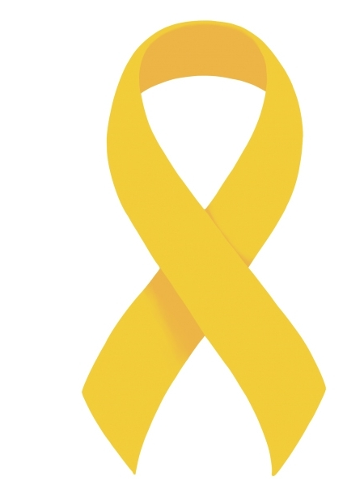

Setembro Amarelo marca a campanha de conscientização sobre a prevenção do suicídio. Durante todo o mês, a iniciativa tem como objetivo chamar a atenção para a importância de discutir e promover ações a respeito do suicídio.
De acordo com a Associação Brasileira de Psiquiatria (ABP), desde 2014, em parceria com o Conselho Federal de Medicina (CFM), o Brasil realiza essa campanha de conscientizar a sociedade e fomentar com informações relacionadas à prevenção do suicídio no país.
Nesse sentido, em sua nona edição, o tema é “Se precisar, peça ajuda!”. Vale ressaltar que a campanha é realizada durante todo o mês de setembro, mas o Dia Mundial de Prevenção ao Suicídio é celebrado no dia 10/09 e endossado pela Organização Mundial da Saúde (OMS).
Nesse sentido, em sua nona edição, o tema é “Se precisar, peça ajuda!”. Vale ressaltar que a campanha é realizada durante todo o mês de setembro, mas o Dia Mundial de Prevenção ao Suicídio é celebrado no dia 10/09 e endossado pela Organização Mundial da Saúde (OMS).Nesse sentido, em sua nona edição, o tema é “Se precisar, peça ale ressaltar que a campanha é realizada durante todo o mês de setembro, mas o Dia Mundial de Prevenção ao Suicídio é celebrado no dia 10/09 e e juda!”.
Segundo a OMS, são registrados mais de 700 mil suicídios em todo o mundo. Mas também informa que existem episódios subnotificados, o que pode chegar a mais de 1 milhão de casos. No Brasil, a estimativa é de 14 mil casos por ano, o que leva em média trinta e oito pessoas cometem suicídio por dia. Entre 2010 e 2019, o país registrou em torno de 112.230 mil mortes por suicídio.
Suicídio de trabalhadoresEmbora a campanha não se concentre exclusivamente em trabalhadores e trabalhadoras, o ambiente de trabalho é um assunto importante para abordar a questão do tema e reduzir o estigma associado à saúde mental e promover soluções e apoio para aqueles que lutam contra pensamentos suicidas.
De acordo com especialistas, o suicídio de trabalhadores (as) e a saúde mental no ambiente de trabalho são preocupações importantes a serem discutidos. Observam ainda que o estresse no trabalho, pressão excessiva, assédio, carga de trabalho excessiva e falta de apoio emocional podem contribuir para problemas de saúde mental entre os trabalhadores e as trabalhadoras.
De acordo com a Pesquisa Nacional de Saúde (PNS), realizada pelo Instituto Brasileiro de Geografia e Estatísticas (IBGE), em 2019, 10,2% das pessoas com 18 anos ou mais receberam o diagnóstico de depressão. Estados do sul e sudeste têm 15,2% e 11,5%, respectivamente, de adultos com diagnóstico confirmado de depressão. Em seguida, o centro-oeste (10,4%), nordeste (6,9%) e norte (5%).
A Fundacentro, por sua vez, exerce um papel fundamental de pesquisa na área de segurança e saúde no trabalho – fomentando estudos que possibilitem a prevenção de doenças, acidentes e mortes nos ambientes de trabalho. A biblioteca da instituição disponibiliza uma série de conteúdos técnico-científicos em SST, acesse o acervo de forma gratuita e também da Revista Brasileira de Saúde Ocupacional - RBSO.
A cor amarela é usada para representar o mês da prevenção do suicídio por causa de Dale Emme e Darlene Emme. O casal foi o início do programa de prevenção de suicídio “fita amarela”, ou “Yellow Ribbon” em inglês.
Em 1994, Mike Emme, filho do casal, com apenas 17, se matou.
Mike era conhecido por sua personalidade caridosa e por sua habilidade mecânica.
Restaurou um Mustang 68 e o pintou de amarelo. Mike amava aquele carro e por causa dele começou a ser conhecido como “Mustangg Mike”.
Entretanto, infelizmente, aqueles próximos de Mike não viram os sinais e o fim da vida do garoto chegou. No dia do funeral dele, uma cesta de cartões com fitas amarelas presas a eles estava disponível para quem quisesse pegá-los. Os 500 cartões e fitas foram feitos pelos amigos de Mike e possuíam uma mensagem: Se você precisar, peça ajuda.
A fota amarela foi escolhida como símbolo do programa que incentiva aqueles que têm pensamentos suicidas a buscar ajuda.
Em 2003 a OMS instituiu o dia 10 de setembro para ser o Dia Mundial de Prevenção do Suicídio, e o amarelo do Mustang de Mike é a cor escolhida para representar este sentimento.
Neste mês, vestimos o amarelo para lembrar a importância de cuidarmos uns dos outros.
O Setembro Amarelo é um período de conscientização sobre a prevenção do suicídio, um assunto que merece nossa atenção o ano inteiro.
Vamos nos unir para combater o estigma em torno da saúde mental e oferecer apoio a quem precisa.Vamos fazer deste Setembro um momento de solidariedade, compreensão e amor.
A vida é uma jornada com altos e baixos, mas é fundamental lembrar que não estamos sozinhos.
Juntos, podemos fazer a diferença e ajudar a salvar vidas.